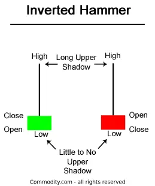
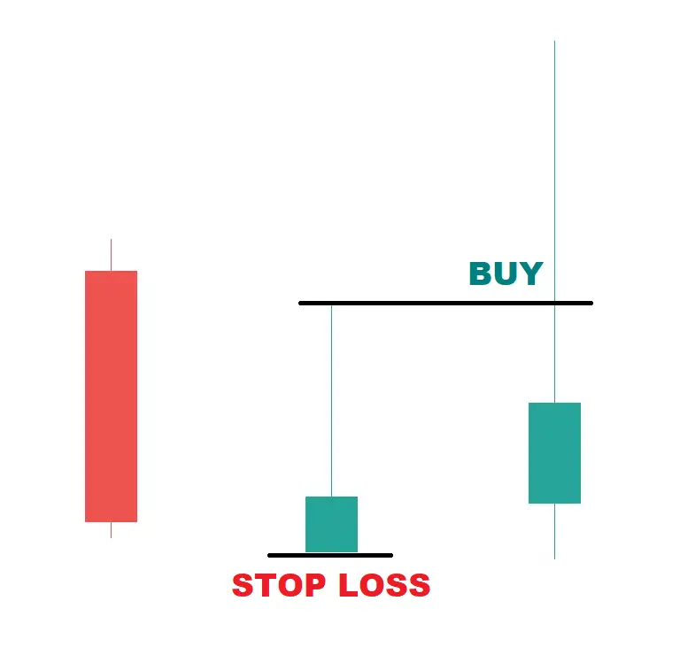

उलटा हथौड़ा कैंडलस्टिक फॉर्मेशन ध्यान देने योग्य है जो ध्वनिवर्धित बाजार के नीचे अधिकतम रूप से होता है और एक संभावित बलशाली उल्टी उभरती रूपरेखा के चेतावनी के रूप में कार्य कर सकता है।
जो कुछ अगले दिन होता है उसके बाद उलटे हथौड़े के पैटर्न के बारे में ट्रेडर्स को यह जानने के लिए एक विचार देता है कि क्या मूल्य ऊपर जाएगा या नीचे गिरेगा।
| Inverted Hammer कैसा दिखता है |
इनवर्टेड हथौड़ा गिरावट के अधिकतम स्तर पर होने वाली एक शक्तिशाली उल्टे शम्भु क्यंदल बनता है जो एक संभावित बल वृद्धि पैटर्न की चेतावनी के रूप में कार्य कर सकता है।
जो कुछ भी इनवर्टेड हथौड़ा पैटर्न के बाद अगले दिन होता है, वह ट्रेडरों को यह जानने के लिए एक विचार देता है कि क्या कीमतें ऊपर या नीचे जाएँगी।
इनवर्टेड हथौड़ा पैटर्न उत्पन्न होता है जब खुले, कम और बंद मूल्य लगभग एक ही मूल्य हों। इसके अलावा, एक लंबी ऊपरी छाया होती है जो असल शरीर की कम से कम दो गुना लंबाई होनी चाहिए।

Let’s take a simple example:
उपरोक्त मूल्य गतिविधि एक 'उलटा हथौड़ा' जैसा मोमबत्ती बनाएगी।
इतना सरल है।
| Inverted Hammer Trading Strategy |
नीचे दिए गए चार्ट का ध्यान दें और ध्यान दें कि एक कंपनी जिसका नाम 'यूनाइटेड स्पिरिट्स' है, की कीमत कुछ दिनों तक लगातार गिरती रही। यह मार्च 2020 में हुआ था।
अब, नीचे सबसे निचली मोमबत्ती पर ध्यान केंद्रित करें जो एक 'इनवर्टेड हथौड़ा' है।
पिछले दिन बड़े गिरावट के बाद, स्टॉक नीचे खुलता है, ऊपर उठता है, और फिर खुलने के मूल्य से थोड़ा ऊपर बंद होता है। इससे 'इनवर्टेड हथौड़ा' बनता है।
यह स्टॉक पहुंच चुका है कि अब इसकी कीमत पर्याप्त रूप से गिर गई है और अब यह ऊपर की तरफ उठ सकता है।
ट्रेडर अब अगली मोमबत्ती का इंतजार करेंगे। यदि वह हरा होता है, तो स्टॉक को 'इनवर्टेड हथौड़ा' के 'उच्च' से ऊपर जाने पर खरीदना चाहिए।
स्टॉप लॉस 'इनवर्टेड हथौड़ा' की 'निम्न' होगी।
इसे स्पष्टतया करने के लिए, हमने ऊपर दिए गए चार्ट से केवल तीन मोमबत्तियों का उदाहरण लिया है और इनवर्टेड हथौड़ा ट्रेडिंग स्ट्रैटेजी को चिह्नित किया है।

चलो मैं फिर से बताता हूँ।
जब चार्ट पर 'इनवर्टेड हैमर' कैंडल बन जाती है - ट्रेडर अगली कैंडल की प्रतीक्षा करता है।
अगली कैंडल लाल हो तो और कीमत 'इनवर्टेड हैमर' से नीचे चली जाती है तो पैटर्न असफल हो जाता है। कोई ट्रेड लेना नहीं चाहिए।
अगली कैंडल हरा हो और कीमत ऊपर जाए - ट्रेडर उस समय तक प्रतीक्षा करता है जब तक कीमत 'इनवर्टेड हैमर' के ऊपर नहीं जाती है।
इससे पुष्टि होती है कि खरीदार संचालन में हैं और कीमत ऊपर जा सकती है।
शेयर खरीदा जाता है। 'इनवर्टेड हैमर' की निश्चित निरस्तीकरण की कीमत पर सख्त स्टॉप लॉस निर्धारित किया जाता है - जैसा कि उपरोक्त तस्वीर में स्पष्ट रूप से दिखाया गया है।
ध्यान दें, हर ट्रेड के लिए स्टॉप लॉस बहुत महत्वपूर्ण है और यह हर ट्रेडर के लिए एक अनिवार्य चीज है। यदि मूल्य 'इनवर्टेड हैमर' कैंडल से नीचे जाता है - तो इसका मतलब है कि हमने ट्रेड करने का कारण फेल हो गया है।
नुकसान को स्वीकार करना होगा। यह अनुशासन का एक हिस्सा है, जो सफल ट्रेडर बनने के लिए अधिकतम महत्व रखता है।
शुरुआत में हमेशा छोटे ट्रेड लें। लाभ लेना सीखें, हानि उठाना सीखें। धीरे-धीरे आपका मन दोनों को स्वीकार करने के लिए अनुकूल हो जाएगा।
याद रखें, हर ट्रेड सफल नहीं हो सकता। सबसे अच्छे ट्रेडरों को भी 10 ट्रेडों में से 6-7 सही होते हैं। हम यहां सर्वोत्तम ट्रेडर की बात कर रहे हैं। नए ट्रेडरों के सफलता अनुपात बहुत कम होता है।
जैसे-जैसे ट्रेडर अनुभव प्राप्त करता है, वह अपनी ट्रेडिंग स्ट्रैटेजी को ट्वीक कर सकता है और अपनी खुद की ट्रेडिंग स्ट्रैटेजी बना सकता है। यह समय और प्रयास लेता है। शुरू में, चार्ट का अध्ययन करने और देखने पर ध्यान केंद्रित करें।
| Inverted Hammer for Long-Term Investors |
दीर्घकालिक निवेशक गुणवत्ता शेयरों को खरीदने के लिए 'ट्रेंड रिवर्सल' कैंडलस्टिक पैटर्न के लिए इंतजार कर सकते हैं ताकि वे निम्नतम स्तर के निकट शेयर खरीद सकें।
2020 के मार्च के 23 तारीख को, जब कोविड-19 के कारण भारतीय स्टॉक मार्केट कुछ दिनों के निश्चलता के बाद एक निम्न स्तर तक गिरा था - कई शेयरों के चार्ट पर 'इनवर्टेड हैमर' और 'हैमर' फॉर्म हुए थे।
यदि बाजार में एक महत्वपूर्ण गिरावट देखी जा रही है - तो लंबे समय तक इंतजार करने वाले निवेशक भी जब चार्ट पर ऐसे 'ट्रेंड रिवर्सल' कैंडल्स फॉर्म होते हैं तो पोजीशन ले सकते हैं, जो निम्नतम स्तर के निकट शेयरों के लिए इंतजार कर रहे होते हैं।
वे एक छोटे पोजीशन से शुरुआत कर सकते हैं और जब स्टॉक उठना शुरू करता है तो अधिक खरीद सकते हैं।
बाजार में एक कहावत है - "कभी गिरती चाकू को पकड़ने की कोशिश न करें"।
जब बाजार गिर रहा हो और स्टॉक दिन-प्रतिदिन गिरते हुए हो रहे हों - जैसा कि मार्च 2020 में हुआ - तब एक अच्छी रणनीति है कि बाजार स्थिर होने तक इंतजार करें।
बाजार को कोरेक्शन पूरा करने दें और यह दिखाएँ कि वह उठने के लक्षण दिखा रहा है। आपको नीचे के मूल्य से 10-15% ऊंचा खरीदना पड़ सकता है, लेकिन अधिकांश मामलों में - आपका औसत मूल्य कोरेक्शन की शुरुआत से अधिक नीचे होगा।
| Inverted Hammer Infographic |
| Is an Inverted Hammer Candlestick Bullish or Bearish? |
एक लंबी डाउनट्रेंड के बाद, एक उल्टा हैमर बनना बुलिश होता है क्योंकि कीमतें दिनभर नीचे जाने में असंतुलित थीं।
विक्रेताओं ने कीमतों को खोलने पर वापस ले जाने के लिए धक्के दिए, लेकिन बढ़ती कीमतें दिखाती हैं कि बैल कुत्तों की ताकत का परीक्षण कर रहे हैं।
| Green vs Red Inverted Hammer |
जब निम्नतम मूल्य और शुरुआती मूल्य समान होते हैं, तब एक बुलिश, हरी इनवर्टेड हैमर कैंडलस्टिक बनता है और इसे एक उद्दंशी बुलिश संकेत के रूप में माना जाता है जो जब निम्नतम मूल्य और बंद मूल्य समान होते हैं ( एक लाल इनवर्टेड हैमर) से अधिक बलवान बुलिश संकेत माना जाता है।